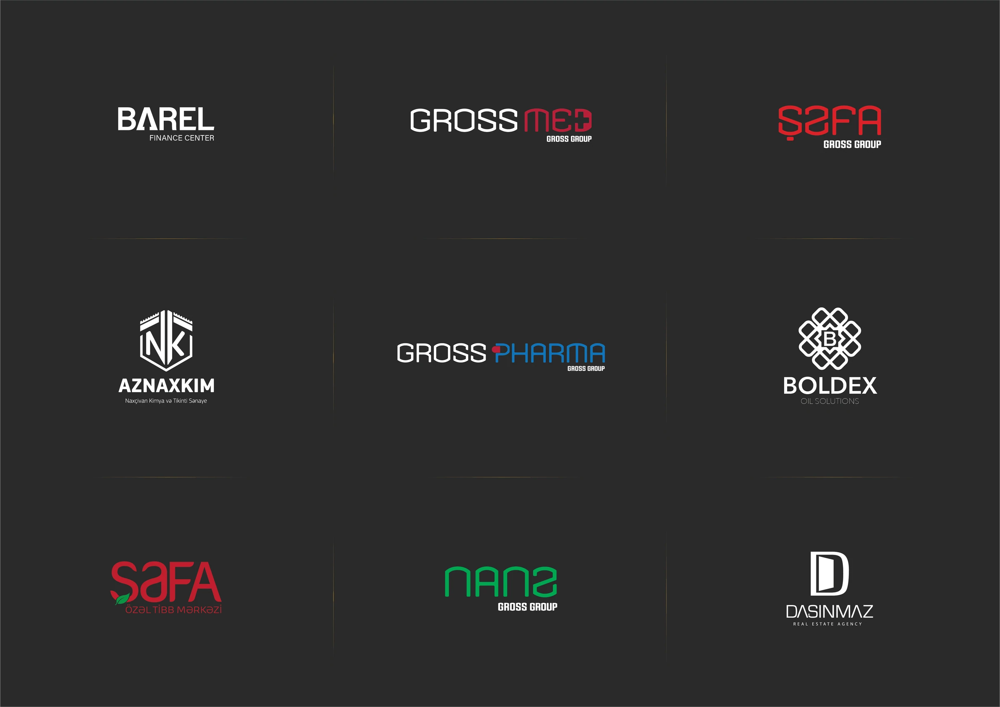
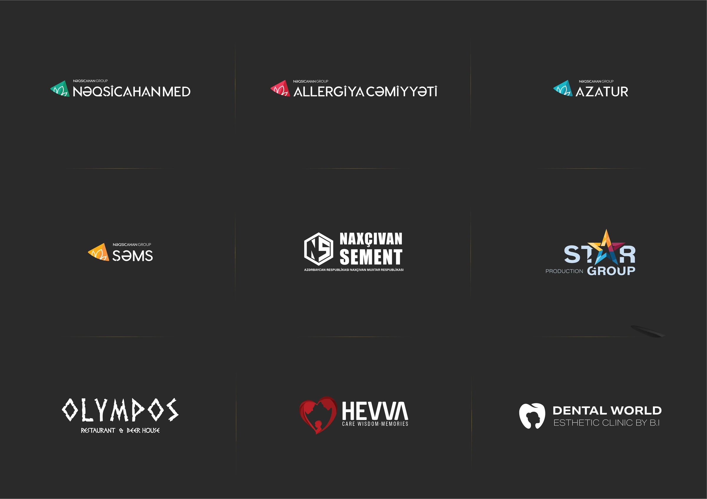

Məna
Hər nişan brendin əsas ideyasını bir vizual jestdə ifadə edir.
Logo Design
Maliyyə, səhiyyə, daşınmaz əmlak, qonaqpərvərlik və istehsal sahələri üçün hazırlanmış loqoları bir araya gətirən seçilmiş kolleksiya.

01 / Ümumi baxış
Kolleksiyadakı hər iş brendin adı, fəaliyyəti və auditoriyasından çıxan fərqli formal dil üzərində qurulub.
Monoqram, söz nişanı və simvol yanaşmaları uyğun sahənin vizual kodlarına əsasən seçilib.
Sadə konstruksiya və aydın kontrast nişanların həm rəqəmsal, həm də çap mühitində rahat işləməsini təmin edir.
02 / Yanaşma
Hər nişan brendin əsas ideyasını bir vizual jestdə ifadə edir.
Forma və tipoqrafiya rəqiblərdən seçilən xarakter yaradır.
Nişanlar fərqli ölçü, fon və tətbiqlərdə oxunaqlılığını saxlayır.
03 / Seçilmiş loqolar

04 / Dizayn prinsipləri
Aydın həndəsə kiçik ölçüdə də sabit görünür.
Şrift seçimi hər brendin tonunu gücləndirir.
Məhdud palitralar nişanların tanınmasını artırır.
05 / Növbəti
Növbəti layihəHeydarii